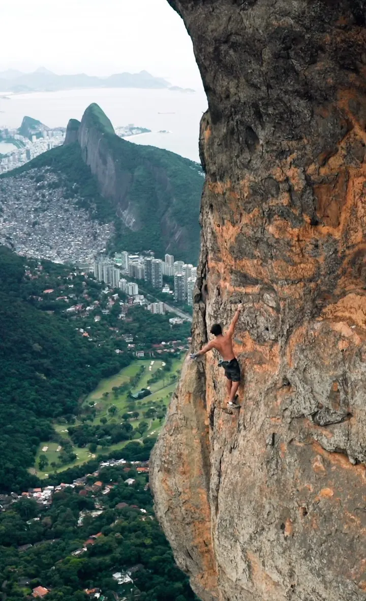
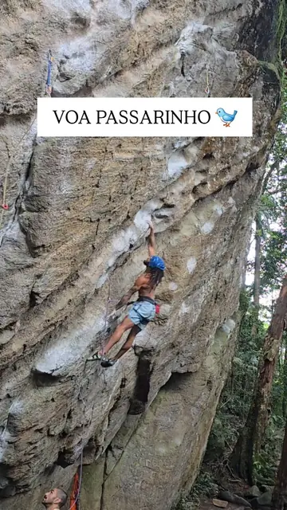
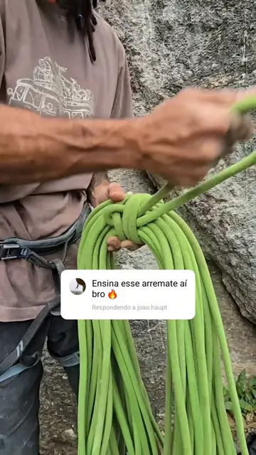
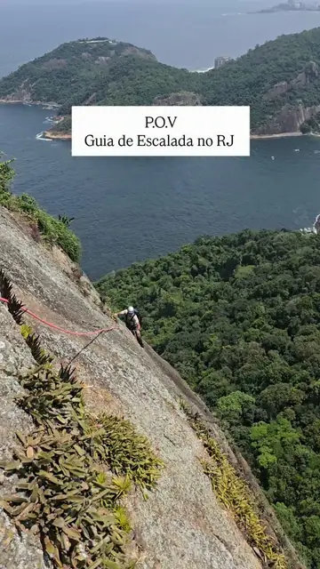
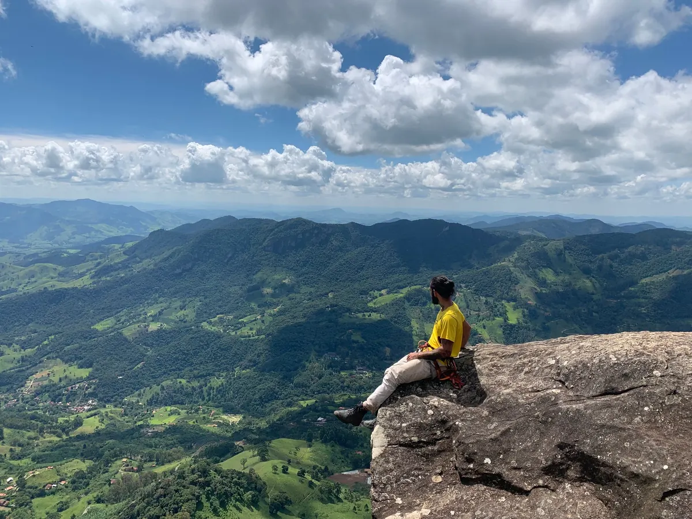
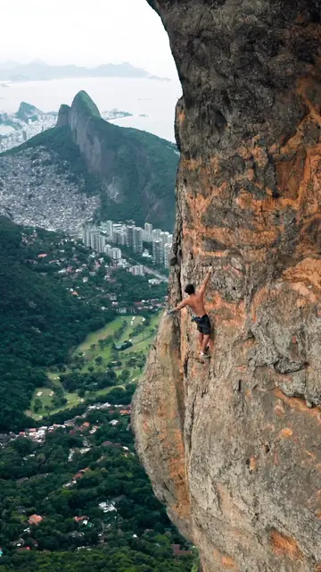
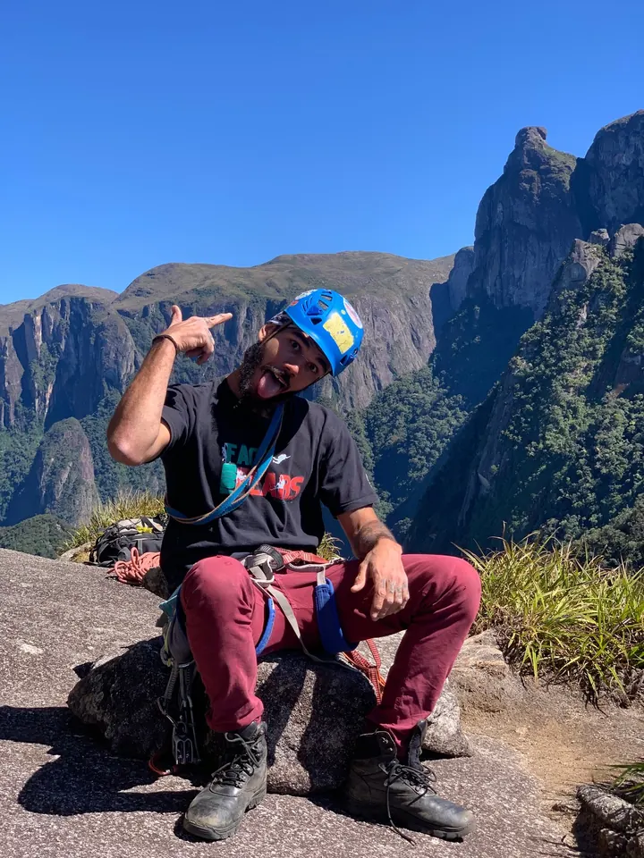

Escale o Rio com o Calango Ninja
Batismo para quem nunca escalou, curso básico para quem quer se virar sozinho e guiamento nas vias clássicas do Rio, com um instrutor que vive na rocha desde 2018.
Melhoria · duas portas na primeira telaHoje o link da bio só tem cupom, matéria, vídeo e mídia kit. Não há como contratar uma aula. Aqui, em 3 segundos, o aluno vai para "Quero escalar" e a marca para "Sou marca".

ESPORTE ESPETACULARQual escalada é a sua?
Três perguntas. No fim, você já fala com o Calango no WhatsApp com a experiência certa.
Melhoria · cada pessoa no caminho certoQuem nunca escalou e quem quer uma via clássica precisam de conversas diferentes. O teste chega no WhatsApp já dizendo o que a pessoa quer, e o Calango responde em uma mensagem só.
Do primeiro passo na rocha às vias clássicas
Valores, datas e ponto de encontro são combinados direto com o Calango no WhatsApp.

Batismo de escalada
Sua primeira vez na rocha, com instrução de segurança e o Calango do teu lado o tempo todo.
Quero meu batismo
Curso básico
Os procedimentos para escalar com autonomia: montar o próprio rapel, descer com segurança, usar o backup.
Quero o curso
Guiamento no Rio
Vias clássicas como a Passagem dos Olhos, na Pedra da Gávea, e as paredes da Urca, com guia experiente.
Quero um guia
Viagens e expedições
Serra do Cipó, Serra do Lenheiro, Patagônia: viagens de escalada fora do Rio, com programação própria.
Ver próximas viagensMelhoria · a oferta apareceHoje o batismo e o curso só aparecem em destaques de 4 a 5 anos atrás, sem preço nem data. Aqui cada experiência tem chamada própria e leva ao WhatsApp com a mensagem pronta. O preço entra quando o Calango confirmar.
O Brasil viu o Calango na Pedra da Gávea

Calango Ninja escala sem cordas a Pedra da Gávea
A travessia da Passagem dos Olhos levou o nome do Calango para a TV aberta.
Assistir no GloboplayOs mais vistos
Melhoria · alcance que vira alunoOs reels chegam a 293 mil e 105 mil views, mas quem assiste não tem para onde ir. No site, cada vídeo fica ao lado do botão de WhatsApp. Com o Pixel instalado, quem assistiu pode ver um anúncio do batismo depois.
Sua marca na rocha, com quem vive dela
Conteúdo real de escalada, montanhismo e natureza, feito por um instrutor e guia, para uma audiência que pratica o esporte.
- Conteúdo para marcas e produtosReels e stories com o produto em uso real, na rocha.
- Publicidade e patrocínioParcerias de médio e longo prazo, com entregas mensais.
- Palestras e eventosMontanhismo, superação e acessibilidade no esporte.
- Projetos sociaisInclusão de novos públicos na escalada.
- Pedir mídia kit e valores
Melhoria · mídia kit sempre atualO mídia kit atual mostra calendário de 2024 e 2025, 31,6 mil seguidores (hoje são 34,3 mil) e um site, calangosdomato.com.br, que não abre. E todo link do bit.ly passa antes por uma página de anúncio de outra empresa. Aqui a marca vê os números de hoje e fala direto com ele.
Melhoria · cupom que vendeO cupom de 15% da SubSub leva hoje a uma imagem no Canva, não à loja. Com o link direto, a marca vê venda e renova a parceria.

Rafael Sales, da Baixada pro mundo
Nascido na Baixada Fluminense, o Rafael virou o Calango Ninja: escalador, instrutor e guia de escalada em rocha no Rio de Janeiro, montanhista e criador de conteúdo.
Para ele, a escalada é uma forma de conectar pessoas com a natureza e com elas mesmas. Por isso atua em projetos de inclusão no montanhismo e usa a internet para levar a escalada a quem nunca imaginou subir numa parede.
Melhoria · a história vende a aulaA história da Baixada e o trabalho social estavam só no mídia kit. No site, viram o motivo de alguém escolher o Calango e não uma escola qualquer.
As paredes do Rio
Melhoria · aparecer no GoogleQuem busca "aula de escalada rio de janeiro" no Maps encontra Climb in Rio (374 avaliações), Companhia da Escalada (299) e Escaladas Clássicas (246). O Calango não aparece, e buscando o nome dele o Maps abre o Platô da Lagoa. O Campo Escola 2000 aparece com o telefone de outra escola. O Perfil da Empresa no Google resolve.
Perguntas frequentes
Nunca escalei. Posso ir?
Pode. O batismo é feito justamente para quem nunca escalou: você aprende o básico de segurança antes de subir.
Preciso ter equipamento?
O que você precisa levar e o que está incluso é combinado no WhatsApp antes da data.
Quanto custa?
O valor depende da experiência e do tamanho do grupo. Chama no WhatsApp que o Calango te passa na hora.
Dá pra ir em grupo ou com amigos?
Dá. Conta no WhatsApp quantas pessoas vão e o nível de cada uma.
Sou de uma marca. Como fazemos uma parceria?
Clica em "Pedir mídia kit e valores" ou escreve para o e-mail de parcerias. Os números do perfil estão atualizados nesta página.
Melhoria · dúvidas antes da conversaAs respostas são um rascunho para o Calango validar. Responder antes evita a pergunta repetida no direct.
Sua primeira via começa com uma mensagem
Faz o teste de 1 minuto ou chama direto no WhatsApp.